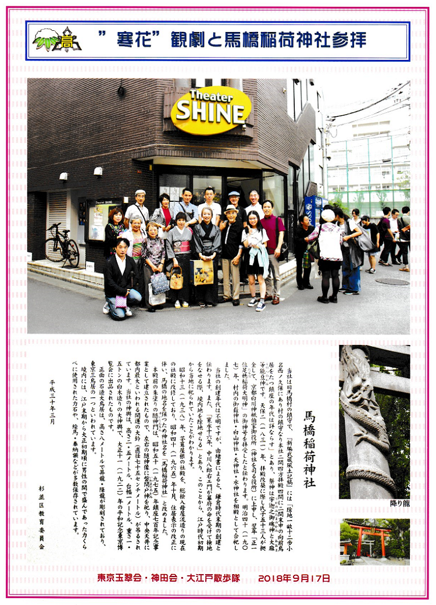
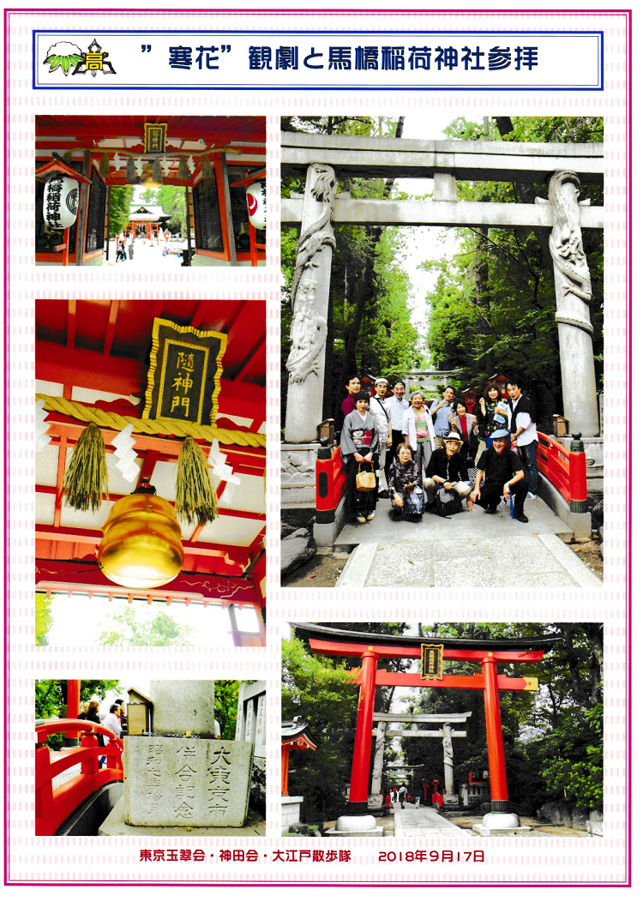

大江戸散歩隊では、2018年(H30)9月17日、シアターシャインで嶋崎真知子さん(H5卒)が出演する「寒花」を観劇したあと、馬橋稲荷神社を参拝してきました。
「寒花」は、皆さんとてもよかったと感嘆の様子。舞台と客席が一体となる環境の広さもあって大満足でした。
馬橋稲荷神社は阿佐ヶ谷にあり、左が「昇り龍」、右が「降り龍」の双龍鳥居があります。「昇り龍」を触りながら願い事をすると、龍がその願いを天に届けてくれ、天に届いた願い事は降り龍になって降りてくるとか。
また、随神門の天井には、都内最大といわれる直径75センチの開運の大鈴が吊るされています。
その後は、南阿佐ヶ谷にある「中國名菜 孫」で食事をしました。

